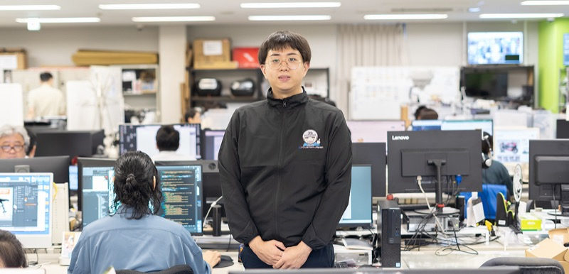

INTERVIEW 07
調達精度を高め、組織に新しい価値を生み出す
01自社ブランドとの出会いが入社のきっかけに
就職活動をしている中で、大学の先生から紹介を受けて参加した大規模イベントが、当社との出会いでした。その会場で目にしたのが、自社開発の電動キックボード。当時、すでに街中で広まり始めていた電動キックボードを自社ブランドとして開発している姿に強く惹かれ、「こんな会社で働きたい」と感じたことを覚えています。大学ではサプライチェーンを専攻しており、原材料の調達から生産、物流、販売までの一連の流れを学んでいました。その知識を実務で活かせる環境だと感じたことに加え、次世代モビリティのような新しい分野にも携わることができると思い、入社を決めました。
02欠品を防ぐため、常に先を見据えた判断が求められる仕事
最初に配属されたのは物流部門で、倉庫で1年半ほど商品の入出荷や在庫管理に携わりました。その後は自ら希望を出して商品開発・企画部門に異動し、現在は海外サプライヤーからの製品調達を担当。自社ブランド「プロセレクトバッテリー」や「バッテリーマン」のバッテリーを中心に、発注や納期・仕様確認に加え、不良や返品が発生した際のメーカーや倉庫との調整まで幅広く担っています。物流の現場を経験したことでコンテナの流れや倉庫の受け入れ状況を把握できるようになり、その知識は在庫管理や発注計画を立てるうえで大きな強みになっています。業務の要となるのは発注で、欠品を出さないことが最重要事項です。売上実績や広告効果を踏まえて需要を先読みし、ときには好調な商品の数量を大きく増やすなど、常に先を見据えた判断が求められます。
03売上に直結する責任をやりがいに、さらなる成長を
新卒でありながら、売上に直結する業務を任せてもらえることに大きなやりがいを感じています。特に欠品を防ぎ、売上計画を達成できたときの達成感は格別です。そうした実務に挑戦できる一方で、当社では月1回の研修が行われており、バッテリーの基礎知識や電圧・電流などについて学ぶ機会もあります。専門知識がなくても学びながら業務を進められる環境が整っているのは心強いです。先輩や上司もフレンドリーで、挑戦を後押ししてくれる雰囲気があります。今後は発注や在庫管理の精度をさらに高め、新規商社との取引によるコスト削減や返品処理の改善にも取り組みたいと考えています。そして将来的には部門のリーダーとして、新商品の調達拡大や業務改善を推進し、組織に新しい価値を生み出していきたいです。
1日のスケジュール
- 出社・発注検討、仕入先連絡
- 昼休み
- 品質管理、返品不良連絡
- 担当ブランド別施策確認
- 退社